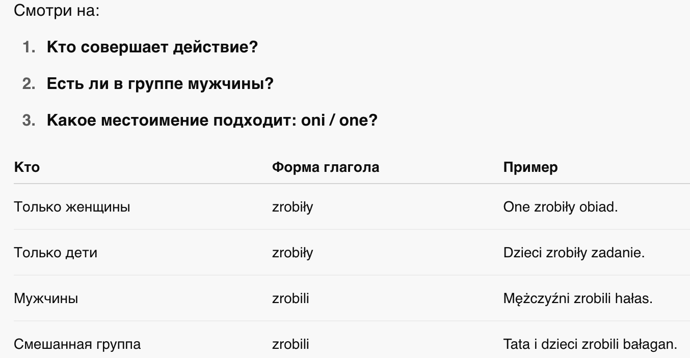
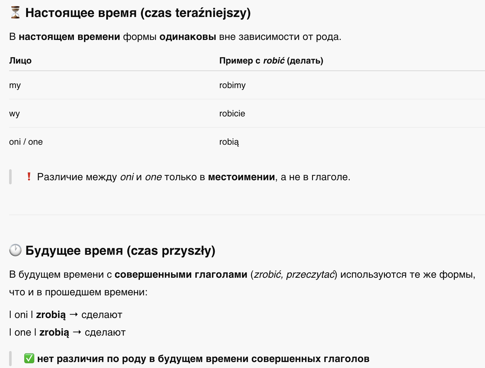
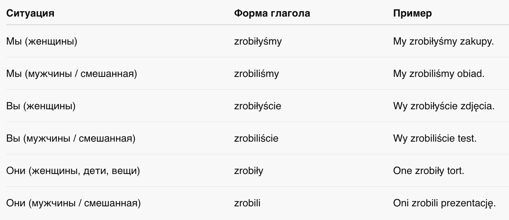
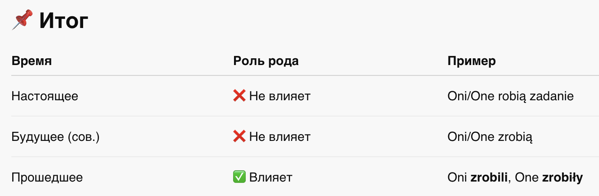

📘 Глава 8: Глаголы во множественном числе
🗣️ Czasowniki w liczbie mnogiej
1. Согласование по роду и числу в прошедшем времени
2. Как определить форму?
3. Поведение глаголов в других временах
4. Глаголы с местоимениями — различия во множественном числе
📍Почему это важно?
В польском языке:
- В настоящем и будущем времени глаголы согласуются только по лицу и числу.
- В прошедшем и условном времени глаголы согласуются по числу и роду (!!!)
Это значит, что:
- zrobili и zrobiły — разные формы;
- Ты не можешь просто сказать "byliśmy" — важно кто был: мужчины или женщины, или предметы.
👥 1. Согласование по роду и числу в прошедшем времени
В прошедшем времени (czas przeszły) глаголы изменяются по:
- лицу (1, 2, 3)
- числу (jedna osoba / wiele osób)
- роду (в единственном числе: męski, żeński, nijaki; во множественном: męskoosobowy / niemęskoosobowy)


🧑🏫 2. Как определить форму?

📊 3. Таблица: обзор исключений и изменений


🧠 4. Глаголы с местоимениями — различия во множественном числе

